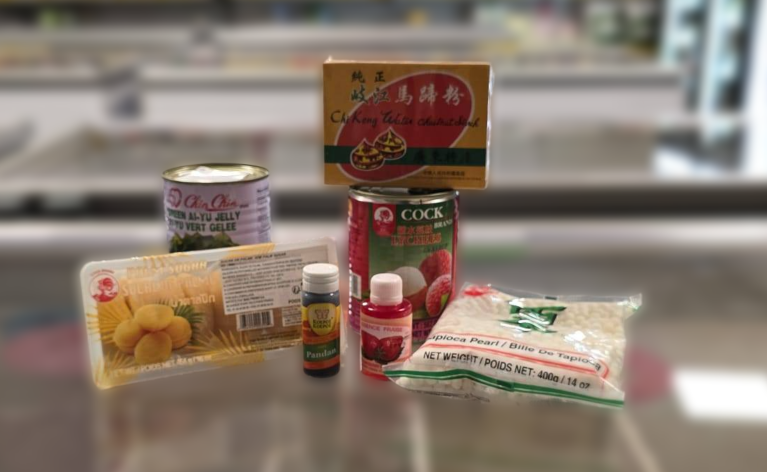
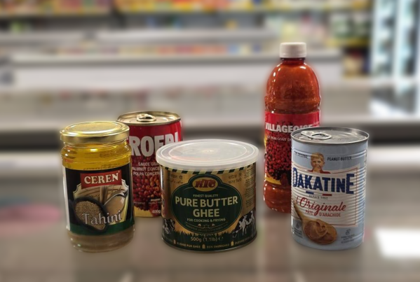
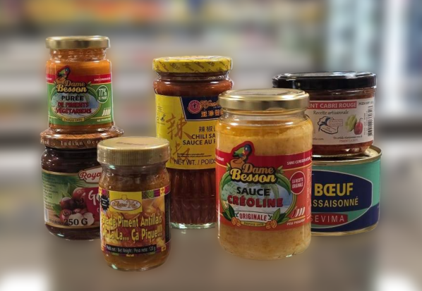
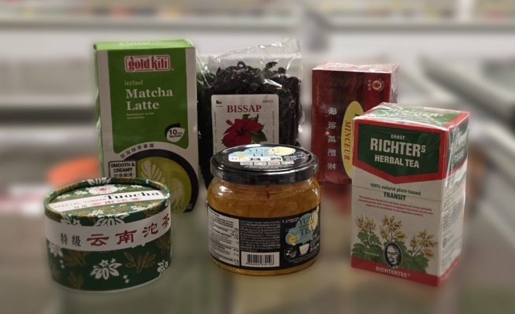
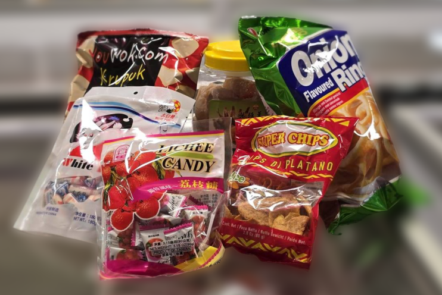
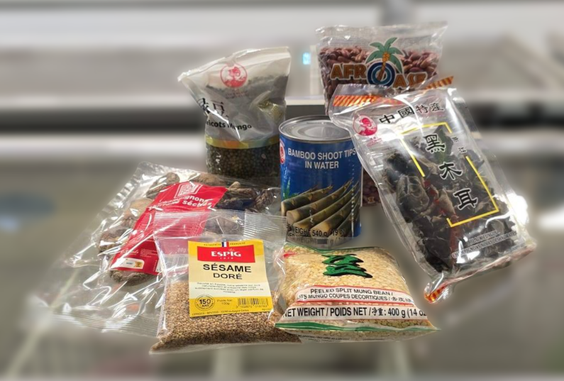

Rayon Divers
Les produits du rayon divers les plus achetés

Desserts – Billes tapioca, sucre de palme, essences variées, fruits au sirop.
Conserves – Pâte d'arachide, pâte de sésame (Tahini), sauce graine.
Produits de la réunion – De superbes produits en provenance de la Réunion.
Thé – Du thé brûle graisse, du bissap, du thé vert, faites votre choix !
Snacks – Différents snacks attendent les gourmands et les gourmandes !
Divers – Champignons noirs, shitake, bamboo, graines de sésame.